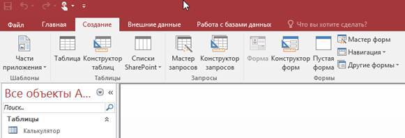
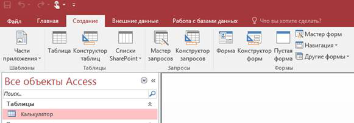
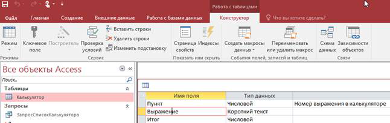
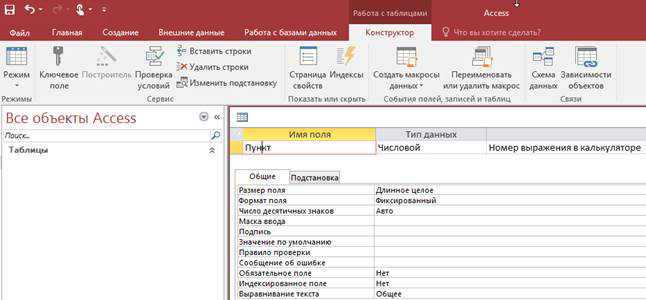

Microsoft Access. Работа с таблицами из VBA
Работа с таблицами в Microsoft Access может осуществляться как мастерами, так и через язык программирование. В этой части книги рассказывается об этом способе разработки.
Вы научитесь создавать таблицу, проверять ее наличие в базе данных, создавать поля и изменять их свойства средствами VBA.
Наверное, Вы уже научились создавать таблицу с помощью мастера, этот способ указан слева. Теперь давайте попробуем создать ее программным способом. Иногда этот способ становится более предпочтительным, чем стандартный. В качестве переменной создаваемой таблицы будем использовать имя StrTable = «Калькулятор»
|
 |
|
На этом снимке экрана показан интерфейс Microsoft Access 2016 для создания таблиц. Для этого в панели меню находится кнопка Конструктор таблиц |
Public Function funCreateTable(strTable As String) As Boolean
Dim dbs As Database, tdf As TableDef
On Error GoTo 999 'Назначаем переход по ошибке
funCreateTable = False 'Возвращаем результат при ошибке
If funVerifyTable(strTable) = False Then 'Проверяем таблицу
dbs = appAccess.CurrentDb 'Находим базу данных
tdf = dbs.CreateTableDef(strTable) 'Создаем таблицу
tdf.Fields.Append tdf.CreateField("Пункт", dbLong) 'Создаем 1 поле
dbs.TableDefs.Append tdf 'Добавляем таблицу
funCreateFields strTable '<3> Создаем поля
funCreateTable = True 'Возвращаем результат
End If
Exit Function
999:
MsgBox(Err.Description, vbCritical, "Создание таблицы") 'Сообщаем красиво об ошибке
Err.Clear() 'Очищаем поток от ошибок
End Function
Проверка таблицы
Очень часто при работе с базой данных Вам надо проверить наличие в базе данных объекта. На данном примере указан способ проверки таблицы в базе данных.
Если объекта нет, то случается ошибка и программа очищает поток от ошибок, возвращая значение False.
|
 |
|
На этом снимке экрана в Access 2016 отображается таблица Калькулятор. Помните, что системные и другие таблицы в разных базах данных могут быть скрыты от просмотра. |
Public Function funVerifyTable(strTable As String) As Boolean
Dim tdf As TableDef
On Error GoTo 999 'Назначаем переход по ошибке
funVerifyTable = False 'Возвращаем результат при ошибке
tdf = appAccess.CurrentDb.TableDefs(strTable) 'Находим объект
If (tdf Is Nothing) = False Then funVerifyTable = True 'Проверяем объект
tdf = Nothing 'Уничтожаем переменную
Exit Function 'Выходим из программы
999:
Err.Clear() 'Очищаем поток от ошибок
End Function
Создание полей таблицы
Создание полей с помощью программы является важным элементом программирования баз данных.
Так как в складском и бухгалтерском учете очень сложно учесть все поля таблиц из-за часто меняющихся требований к учету, естественно Вы должны предусмотреть в своих программах изменение базы данных различных версий по шаблону (метод называется репликацией). В данном примере в таблицу «Калькулятор», переменная strTable, добавляются два новых поля Выражение иИтог, а также изменяются свойства поля Пункт
|
 |
|
На этом снимке экрана таблица Калькулятор в Access 2016 находится в режиме проектирования полей. Мы видим три поля, тип данных и описание. |
Public Function funCreateFields(strTable As String) As Boolean
Dim dbs As Database, tdf As TableDef, fld As Field
On Error GoTo 999 'Назначаем переход по ошибке
funCreateFields = False 'Возвращаем результат при ошибке
dbs = appAccess.CurrentDb 'Определяем базу данных
tdf = dbs.TableDefs(strTable) 'Находим таблицу
With tdf 'Выбираем таблицу для изменения
.Fields.Append.CreateField("Выражение", dbText, 75) 'Создаем поле Выражение
.Fields.Append.CreateField("Итог", dbDouble) 'Создаем поле Итог
End With
fld = tdf.Fields("Пункт") 'Изменяем свойства поля "Пункт"
funChangeProperty(fld, "Description", dbText, "Номер выражения в калькуляторе") 'Изменяем описание
funChangeProperty(fld, "Format", dbText, "Fixed") 'Назначаем фиксированный формат
funChangeProperty(fld, "DecimalPlaced", dbByte, 0) 'Отключаем десятичные знаки
fld = Nothing 'Уничтожаем переменную поля
tdf = Nothing 'Уничтожаем переменную таблицы
funCreateFields = True 'Возвращаем результат
Exit Function 'Выходим из программы
999:
MsgBox(Err.Description, vbCritical, "Создание таблицы") 'Сообщаем об ошибке
Err.Clear() 'Очищаем поток от ошибок
End Function
Изменение свойств таблицы
Когда Вы создаете поле программным методом, некоторые его свойства, например, Описание (Description) не создаются автоматически.
Вам необходимо научиться изменять свойства полей базы данных, а в случае необходимости добавлять их в базу данных.
На этом примере показано, как изменить значение свойства поля базы данных. В данной программе также предусмотрено, что если свойство отсутствует, то оно будет добавлено в базу данных.
|
 |
|
У каждого поля кроме его имени и типа данных есть дополнительные свойства. На этой форме в Access 2016 показано, что их можно увидеть в конструкторе таблицы |
'Параметры:
' fld - поле в таблице (Объект Field)
' strName - имя свойства (Description, Format ...)
' varType - тип свойства (dbText, dbLong ...)
' varValue - значение свойства
'
Function funChangeProperty(fld As Field, strName As String, varType
As Variant, varValue As Variant) As Boolean
Dim prp As Object
On Error GoTo 999 'Назначаем переход по ошибке
funChangeProperty = False 'Возвращаем результат при ошибке
fld.Properties(strName) = varValue 'Присваиваем значение полю
funChangeProperty = True 'Возвращаем результат
Exit Function 'Выходим из программы
999:
If Err = 3270 Then 'Свойство не найдено
prp = fld.CreateProperty(strName, varType, varValue) 'Создаем свойство
fld.Properties.Append prp 'Добавляем свойство
Err.Clear() 'Очищаем поток от ошибки
Resume Next 'Возвращаемся к следующему оператору
End If
Err.Clear() 'Очищаем от незнакомой ошибки
End Function
Проверка знаний
Теперь Вы научились создавать таблицы и поля базы данных, а также изменять из свойства.
Ваш результат обучения Вы можете увидеть, нажав кнопку [Проверка N3] внизу экрана. Перед Вами отобразится база данных, в которой будет пустая таблица «Калькулятор». На следующем этапе программирования мы будем создавать запросы SQL, которые нужны для управления формой калькулятора. Итак для изучения следующей лекции нажмите кнопку Вперед>
|
ОГЛАВЛЕНИЕ |
ССЫЛКИ ПО ТЕМЕ |
|
Книга для чтения в формате RSS Загрузить исходники по теме (скоро …) |
Автор: Виктор Leadersoft на 8:33
Отправить по электронной почтеНаписать об этом в блогеОпубликовать в TwitterОпубликовать в FacebookПоделиться в Pinterest
Ярлыки: 3.Обучение, Access, BookAccess, VBA